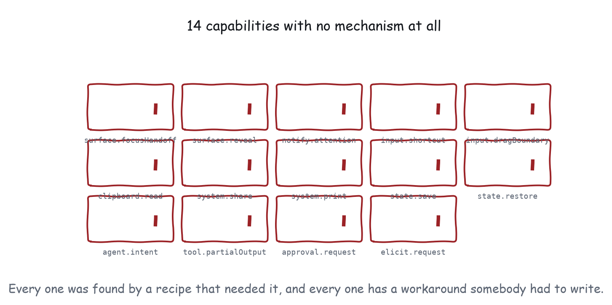

Appendix B
The Gaps
Sixteen capabilities with no standard mechanism, what each one costs, and the shape a proposal would take.
Every entry below is a capability that recognisable applications need and that no message, permission or platform feature currently provides. Ten of them are Core, which means they are needed at their conformance level.

| Capability | Level | What is missing | Recipes blocked |
|---|---|---|---|
surface.compose | 3 | Put more than one view on the same surface, arranged. | 1 |
surface.viewMessage | 3 | Let two views on one surface exchange anything at all. | 0 |
surface.focusHandoff | 2 | Hand focus across the host boundary in either direction. | 0 |
surface.reveal | 2 | Ask the host to scroll the conversation until this view is visible. | 0 |
notify.attention | 3 | Signal from a backgrounded view that a human is needed. | 2 |
input.shortcut | 2 | Own an accelerator without fighting the host for it. | 2 |
input.dragBoundary | 2 | Drag something out of the view and into the host, or the reverse. | 0 |
clipboard.read | 2 | Read what the user has on the clipboard. | 1 |
system.share | 3 | Invoke the operating system share sheet. | 1 |
system.print | 3 | Request host-mediated printing. | 0 |
state.save | 3 | Persist view state keyed to the view's identity. | 3 |
state.restore | 3 | Come back up where the user left off. | 1 |
agent.intent | 4 | Name a semantic action rather than describing it in prose. | 1 |
tool.partialOutput | 4 | Update stable elements as results arrive, not after. | 2 |
approval.request | 4 | Require a human signature on a sensitive action. | 1 |
elicit.request | 4 | Ask the user a structured question mid-operation. | 1 |
What each one costs, and what would fix it
surface.focusHandoff
Neither party can move focus across the frame boundary. A view cannot return focus to the composer when a form is finished; a host cannot direct focus into a view’s search field. Voice control and switch access both need it.
Workaround. Finish interactions with a teardown request so focus returns by ordinary means, and register a tool that focuses a named element so an agent can do it.
Shape. ui/request-focus from the view, declinable, and a focus grant notification in the other direction carrying an optional target.
Reopens. Focus theft, which is why the request has to be declinable and should require a recent user gesture.
surface.reveal
A view scrolled out of the conversation cannot ask to be scrolled back into it. Anything that happens inside it is invisible until the user looks.
Workaround. Design for being unobserved: legible state on return, once the change has already happened.
Shape. ui/request-reveal, which the host may honour by scrolling, by badging, or by ignoring.
Reopens. Attention hijacking, mitigated by leaving the host in control of what “reveal” means.
input.shortcut
A view cannot discover which accelerators the host has taken, and cannot be told when it has collided. From the user’s side an accelerator sometimes works and sometimes does not.
Workaround. Take few, prefer document-scoped conventions, and always show a visible control.
Shape. A reserved-chords list in hostContext, or a request to claim one that returns whether it was granted.
Reopens. Nothing much. This is the cheapest of the fourteen.
input.dragBoundary
Nothing can be dragged out of a view into the host, or in from the host, other than files the browser routes.
Workaround. Clipboard out, file input or paste in, resources/read when the object lives on the server anyway.
Shape. A serialisable transfer payload carried in a message on drag start and drop, with the host mediating both ends.
Reopens. Exfiltration, since a drag out is data leaving the frame. Needs the same treatment as ui/download-file.
clipboard.read
No permission exists, and the browser refuses reads from an opaque origin.
Workaround. Offer a paste target. The user’s Cmd+V is the consent, and the browser delivers the content without any permission.
Shape. A clipboardRead permission requiring a user gesture and a host-mediated grant, probably with visible indication in host chrome.
Reopens. Silent reading of whatever the user last copied, which is often a credential.
system.share
navigator.share needs the web-share permission policy, which is not in the extension’s set of four.
Workaround. ui/open-link with a canonical URL, or the clipboard.
Shape. A fifth permission, or a ui/share request taking standard content types, which would let the host present its own share surface.
Reopens. Little; the host would own the surface.
system.print
window.print needs allow-modals, which the sandbox does not grant.
Workaround. Generate a document and hand it to ui/download-file.
Shape. ui/print taking an embedded resource.
Reopens. Modal blocking of the host’s own window, which is why a request is the right shape.
notify.attention
A backgrounded or collapsed view cannot signal that a person is needed.
Workaround. A banner that survives until the user returns, and a context update so the model can raise it in the next turn.
Shape. ui/request-attention with a severity and a short label. Host free to badge, chime, or ignore. Probably the same feature as surface.reveal.
Reopens. Notification spam from many embedded views, which is exactly why the host must stay in control.
state.save and state.restore
The view’s origin is opaque, so storage is unavailable, and the extension has no state message. The Apps SDK on the other side of this ecosystem has setWidgetState, and the specification lists state persistence as deferred.
Workaround. Persist through an app-only server tool. Costs a round trip and fails entirely at Level 1.
Shape. ui/set-view-state and a viewState field in the initialize result, scoped to the view identity the host already tracks, with a host-enforced size limit.
Reopens. Storage as a covert channel between views, which a per-view scope and a size cap address.
agent.intent
A view can send prose, and cannot send a verb and a target. The round trip through prose is lossy and untestable.
Workaround. Register a tool so the agent has a precise entry point in the other direction, and send structured data alongside the prose.
Shape. ui/intent with a verb, a target and arguments, delivered as a structured turn.
Reopens. Little; it is strictly more precise than the message it replaces.
tool.partialOutput
Input streams to the view. Output does not. There is no partial tool result.
Workaround. Poll an app-only tool, rely on a host that re-sends results, or paginate.
Shape. ui/notifications/tool-result-partial, mirroring the input side, with the same “never rely on it, always get a final one” contract.
Reopens. Nothing. This is the most clearly justified of the fourteen and the asymmetry with input streaming is hard to defend.
approval.request
A view’s Approve button is a button in an untrusted iframe. Nothing is attested, and the host does not know an approval happened.
Workaround. Queue at the server, perform through an app-only tool, and show provenance in the view. A convention, not a guarantee.
Shape. ui/request-approval answered by the host after the host itself asks the user, returning something the server can verify.
Reopens. Nothing; it closes the phishing case, since the host would render the consent surface.
elicit.request
Core MCP has elicitation from server to host. There is no view-to-host equivalent, so a view’s mid-operation question carries no more weight than any other pixels in the frame.
Workaround. Ask in the view and accept the weaker guarantee, or send a message and take a turn.
Shape. ui/elicit mirroring elicitation/create, with the same hard prohibition on credentials in form mode and the same URL mode for anything that touches authentication.
Reopens. Credential phishing, unless the prohibition is carried over unchanged.
Reading this appendix as a work list
The fourteen are not equally urgent, and the ordering that matters is by how many applications they block and how cheap a mechanism would be.
Cheap and clearly justified. tool.partialOutput and input.shortcut. The first is an asymmetry with the input side that is hard to defend; the second is a list in hostContext and reopens nothing.
Cheap, with prior art on both sides of this ecosystem. state.save and state.restore. The Apps SDK has setWidgetState, the specification lists state persistence as deferred, and the shape is well understood.
Needs a design, not just a message. approval.request and elicit.request. Both require the host to render a consent surface the user trusts, and both have to carry the core specification’s prohibition on collecting credentials into an untrusted frame.
One feature wearing three hats. surface.reveal, notify.attention and the visibility half of lifecycle.visibility are all the same missing signal: the host knows whether a view is being looked at, and the view does not.
Genuinely hard. clipboard.read and input.dragBoundary, because both move data across the boundary in the direction the sandbox exists to prevent.